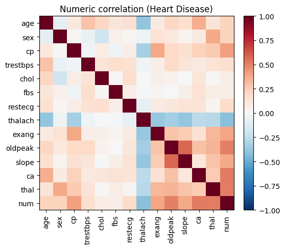

Downstream fidelity
The downstream-fidelity module compares real and synthetic datasets by fitting equivalent predictive models and inspecting how coefficients, directions of effect, and uncertainty translate between them. It automatically derives a modeling formula from metadata, performs multiple imputation for missing data, and reports side-by-side parameter estimates to highlight agreement or drift. The example below uses the curated SemMap metadata (which marks num as the target).
# Visualize correlations to motivate downstream modeling choices.
import pandas as pd
import matplotlib.pyplot as plt
heart = pd.read_csv("../downloads-cache/uciml/45.csv.gz")
corr = heart.corr(numeric_only=True)
fig, ax = plt.subplots(figsize=(6, 5))
im = ax.imshow(corr, cmap="RdBu_r", vmin=-1, vmax=1)
ax.set_xticks(range(len(corr.columns)))
ax.set_xticklabels(corr.columns, rotation=90)
ax.set_yticks(range(len(corr.index)))
ax.set_yticklabels(corr.index)
ax.set_title("Numeric correlation (Heart Disease)")
fig.colorbar(im, ax=ax, fraction=0.046, pad=0.04)
plt.tight_layout()

Formula discovery
auto_formulabuilds a Patsy formula by inferring target roles from the dataset schema, coercing dtypes (including categorical levels from codebooks), and generating main effects plus interaction candidates. Cross-validated feature screening enforces strong heredity, keeping parents of any retained interactions to stabilize the model.
# Create a target-aware formula straight from the SemMap metadata.
import json
import sys
from pathlib import Path
from importlib import reload
sys.path.insert(0, str(Path("..").resolve()))
import semsynth.downstream_fidelity as dfid
dfid = reload(dfid)
meta = json.load(open("../mappings/uciml-45.metadata.json"))
formula = dfid.auto_formula(heart, meta, dfid.DownstreamConfig())
formula
"num ~ Q('age') + Q('sex') + Q('cp') + Q('fbs') + Q('trestbps') + Q('chol') + Q('restecg') + Q('thalach') + Q('exang') + Q('oldpeak') + Q('slope') + Q('ca') + Q('thal') + Q('age'):Q('sex') + Q('sex'):Q('cp') + Q('cp'):Q('fbs') + Q('fbs'):Q('trestbps') + Q('trestbps'):Q('chol')"
The curated metadata already declares the num diagnosis column as the target, so auto_formula discovers the correct prediction task without manual overrides.
Multiple imputation and estimation
fit_with_mirecodes categorical variables, replaces missing codes, and runs MICE (statsmodels.imputation.mice) to produce pooled estimates for generalized linear models appropriate to the target type (binomial, Poisson, or OLS).
Comparative reporting
compare_real_vs_synthsanitizes the inputs, fits the auto-discovered model with multiple imputation on real and synthetic data, and returns a dataframe of paired coefficients and standard errors with a sign-match indicator. When model fitting fails, it falls back to a simpler logistic comparison but still surfaces the skipped reason to the caller.
References
Patsy formula language: https://patsy.readthedocs.io/en/latest/
Rubin’s rules for multiple imputation: https://doi.org/10.1002/sim.4067
statsmodels MICE implementation: https://www.statsmodels.org/stable/imputation.html